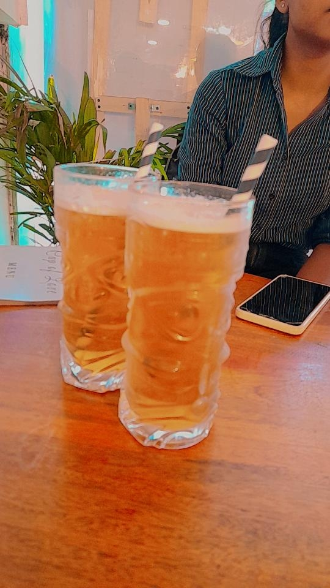
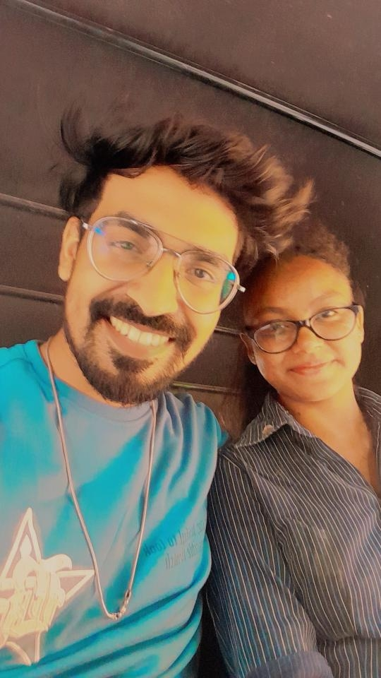
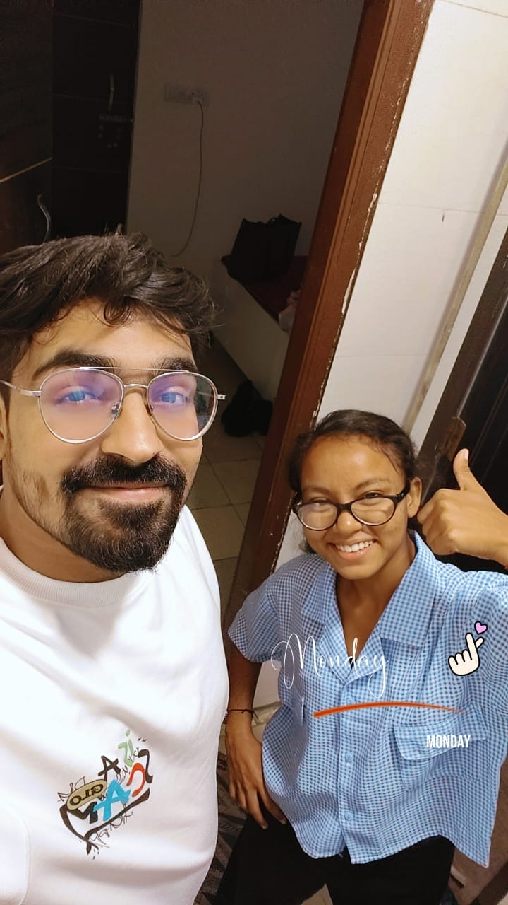
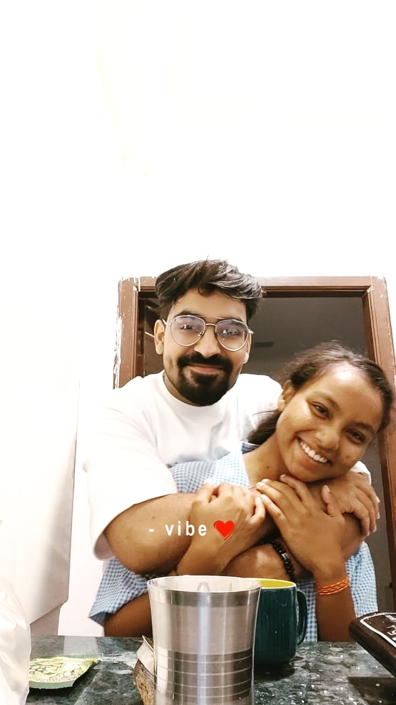
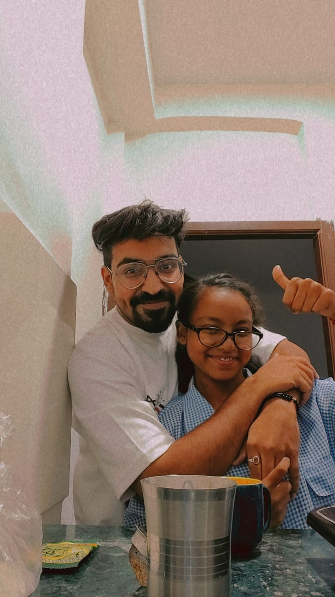

A little place for two people
Our Little
Universe
Some memories are too precious
to be left only in our minds.
BEFORE WE KNEW
Maybe it was
just a normal day...
But some ordinary days quietly become the days you remember forever.
And ours started without either of us knowing what was coming.
30 SEPTEMBER 2024 · MONDAY
The day we met.
The beginning of something neither of us had planned.
A plan that wasn't really a plan.
I had my digital marketing class that day. I thought I would sit in Lodhi Garden and attend it there.
At that time, my Smart Value team had already ended. Friends had left, things had changed, and I had started thinking about meeting new people, making friends and building a team again.
I was bored. So I decided to go out.
And for the first time, I went to Lodhi Garden alone.
Same place.
Same time.
Around 12 PM, we both arrived at almost the same time, on the same step.
He looked at me and simply said:
I like your style.”
I was wearing a shirt and trousers, shoes and my bag.
He was wearing a T-shirt and trousers. I thought he might be a college student living somewhere in Delhi.
Apparently, he thought I looked like a working girl.
I walked away.
We talked for a little while. Then I started walking away.
His face changed. He was alone, and it probably looked like I was ignoring him.
But I looked at the situation differently. We were both alone.
So I went back.
Maybe I just wanted to make a new friend. I had no idea that I was walking back toward someone who would later become so important to me.
Too many similarities.
We started talking. Then we found out that we had so many similar hobbies and interests.
It felt like more than coincidence, although I didn't think much about it that day.
We kept walking. We kept talking. Places changed, but somehow the time didn't feel like it was moving.
I even missed my class.
A little cute.
Maybe a little flirty.
We sat somewhere and talked.
He seemed cute to me, although I wasn't really thinking about it that way.
Later I realised that maybe he had already started taking little chances and flirting.
I was just too innocent to notice.
“I'm going home today.”
He told me he was leaving for home that day.
I remember wondering: what relation do I even have with this person I met today?
And then, suddenly, I thought I should take his number.
We exchanged numbers and Instagram IDs.
And just like that, a stranger became someone I could message.
The duck that became a “duct”.
We talked about family, random things and everything in between.
My throat wasn't good that day. I said “duck”.
He heard “duct”.
And somehow we ended up looking for the ducks and the water area we thought we were going to find.
We didn't find what we were looking for. But the memory stayed.
“Have you been to CP?”
He told me he had been to CP and liked mutton there.
I had never been to CP.
So he suggested that we go. I had time, so I said okay.
We left the Lodhi Road side around 2 PM.
We walked, ate kulfi, and kept talking.

I didn't even know this was a date.
Still a stranger.
He booked an auto. I felt a little uncomfortable because he was still an unknown person to me.
But after spending so much time together, I thought it would probably be okay.
Then suddenly he put his hand on my shoulder.
darro mat.”
The rajma disaster.
We reached CP and ate rajma.
It was bad.
Neither of us liked it, but neither of us said it immediately.
Eventually, we threw it away.
Then a very overweight uncle walked past. I commented, “kya figure hai,” and Kunnu started laughing.
The first hand-hold.
We crossed the road.
He wanted to hold my hand and found an excuse.
I gave him my hand.
And he kept holding it.
His hand was warm. I even told him that.
I didn't know then how many times that hand would become familiar.
Not a date.
Or so I thought.
We went to a café. I don't even remember its name now.
I didn't think this unexpected meeting was a date.
A girl sitting behind us kept looking at Kunnu.
I wasn't jealous then. I definitely am now.
Kunnu wanted to dance with me. I told him to dance with her instead.
He looked back... and maybe she stopped looking.

Small things I remember.
We wandered around, looked at keychains, talked and kept moving.
I didn't carefully look at him that day. I didn't notice his dimple properly. I didn't realise how cute his smile was.
But his voice stayed somewhere in my head.
And suddenly, the day was ending.
He got a call that he had to reach the airport.
I asked him to drop me at the bus stand.
He wanted to hug me. I didn't allow it.
His rider came. He left a little upset.
And I went home with a stranger's number in my phone.
Then I messaged him.
And somehow, we talked on Instagram almost the whole night.
I enjoyed talking to him.
I still didn't know that the day had actually been a date.
He told me later.
And maybe that was the first chapter.
TIME PASSED
And somehow...
One day became conversations. Conversations became memories. And memories became us.
14 SEPTEMBER 2025 · SUNDAY
He came back to Delhi.
One night flight, one “mai agya”, and one very long day waiting to happen.
“mai agya”
Kunnu had his Ganesh Chaturthi finale and natak.
He took a night flight to Delhi and reached around 4 AM.
He messaged that he had arrived. I saw it around 8 AM.
He had come all this way. For Delhi. For us.
The plan that didn't happen.
I was at Delton Hall. My invitation shift was at 11 AM.
I had expected a 9 AM shift, so I thought I would be free around noon.
The plan was to call him to Jor Bagh Metro and go together.
But plans don't always listen to us.
“Bhagya kitna time lagega?”
He called and asked how long I would take.
I told him maybe 2 PM.
He had already gone to the metro, dressed up in an outfit I liked, trying to impress me.
Some girls in the metro were staring at him. He eventually left.
Then he disappeared from the phone.
I finished my invitation work, sent the invitee to the planshow, and finally became free.
I called Kunnu.
He had ridden a bike to the room. The bike noise made it hard for him to hear his phone.
I called again. And again.
He didn't answer.
I got scared.
“Kya hua Bhagya itna call kiya?”
He finally called back.
He had reached the room, was checking things, turned on the AC, and was resting.
I told him to eat because I would still be late.
par tumse mile bina kuch na khaunga
na kahi ghumunga.”
And then somehow, I had to finish my work faster.
“Aa jao na yrr...”
I was finally free around 3 PM.
He teased me on the phone:
mai flight lekr Pune chla jaunga.”
I was tired. But he had come from so far.
I didn't want to hurt him.
Finally, I went.
I reached Green Park Metro.
At first, I couldn't see him at the exit. I went outside.
Then he called and said he was inside.
So I went back inside the metro.
He was thinking about a hug and a kiss. I was nervous.
And neither of us knew how the next few hours would unfold.
The ticket trouble.
His ticket scanned. Mine didn't.
He had used his phone and needed to select/slide another ticket.
Eventually mine worked too.
Then we boarded the metro towards Rajiv Chowk.
He kept me close.
The metro was extremely crowded.
He protected me from the crowd, and I held his hand.
People kept looking at us.
At Rajiv Chowk, he said something and I punched him.
And yes, people looked even more.
The art café scam.
We reached CP.
He searched Google for an art café.
We went there...
And got scammed.
It wasn't good at all.
Still, we sat there holding hands. He kept looking at me.
Suddenly, everything felt softer.
A couple sitting behind us was being romantic.
Watching them made Kunnu even more romantic.
He kept holding my hand and looking at me.
Then paneer tikka arrived.
Neither of us liked it.
So we decided to go back to the room.
The ride home.
We took an auto/cab back.
He kept teasing me, put his arm around my waist, and kissed my cheek.
I became shy.
The day had changed completely from what I had imagined that morning.
A very private evening.
He showed me his natak video.
We lay down to watch it. I watched for a while and then asked him to stop.
We hugged and became closer. The evening turned into a deeply private and intimate moment between us.
Some things from that evening don't need to be written out.
We know what they meant.
The little things.
He buttoned my shirt, fixed my hair and joked:
toh baal kyu nahi.”
I laughed.
We hugged, talked and stayed close.
“Kal kya pehnoge?”
I asked what he would wear the next day.
He said he had brought a denim-like shirt.
I asked him to try it.
He changed into it. I went close and fixed it.
It was loose, so I told him to wear it properly.
Time to go home.
We went downstairs.
He booked a cab for me.
After reaching home, I messaged him:
He slept early, around 9 PM.
And I went to sleep too.
15 SEPTEMBER 2025 · MONDAY
One more day.
The day that somehow held laughter, tears, tea, Maggie and a goodbye.
“Kitne baje aaogi?”
He messaged in the morning asking what time I would come.
I bathed, got ready, and went to Yusuf Sarai roadside.
I waited there.
Back together again.
He called and asked where I was.
I told him I was at the same place from where I had gone home the previous day.
He came and was buying things.
We walked around the market and bought things together.
Tea, reels and his natak.
I lay on the bed scrolling through reels.
He took off his T-shirt, made tea and came to lie beside me.
Earlier, when we entered, he had seen my boots and happily said I looked like a model.
“Model type.”
Watching his natak again.
He played his natak video again.
It was in Marathi, so he explained everything to me in Hindi.
I was a little bored, but he kept lovingly looking at me.
He even acted out parts of his natak while we had tea.
Then we talked about his life.
After tea and the video, I asked about his job and why he never told me online why he became so emotional.
He told me about his journey.
He cried. He lowered his head.
I felt bad seeing him like that and hugged him.
Sometimes love is just sitting beside someone when they don't have words left.
Questions we couldn't avoid.
We became close again, and the moment became deeply intimate.
Later I asked him:
He said yes and asked why I was asking.
I told him that so much had happened, and it had only been about a year.
He mentioned that his mother might marry him to a software engineer.
And yes, I got angry.
I wanted to leave.
I told him I needed to dress and asked him to go to the bathroom.
He asked what had happened. I ignored him.
I pushed him away and told him to go to the bathroom.
I quickly dressed and prepared to leave.
I didn't want to stay angry, but I was hurt.
Neither of us was okay.
He stopped me. He hugged me and asked me not to go.
He kept asking what had happened.
I scolded him. I told him I felt like he had taken advantage of me.
I cried. He cried a lot too.
He held me.
And still, I left.
Because sometimes leaving doesn't mean you want to leave.
After some time, I came back myself.
We hugged.
We both cried.
No perfect words. Just two people trying to understand what they were feeling.
Then he made Maggie.
Somehow, after all those tears, he went to make Maggie.
He made it romantically, kept hugging and kissing me, and somehow I turned red.
The Maggie wasn't even that good.
He said it would have been better with tomato.
We ate together.
We ate from the same plate.
He lifted my face and told me he couldn't see me crying.
He called me innocent.
Even while eating, he still wanted to be close.
When I asked what was wrong, he simply said:
Quiet again.
We lay down and cuddled.
He showed me a video about kissing.
There was a girl in the video.
I covered his eyes.
toh aap dusri kyu dekhoge bhala.”
We joked and talked.
And eventually, I fell asleep.
The headache.
I woke up with a headache.
I told him my head hurt.
He offered to massage it.
I asked if he hadn't slept.
He said no.
I asked why.
He was looking at me.
Black tea & one cute photo.
We both got up and washed our faces.
He made black tea.
We took a photo while making tea.
And somehow, we looked really cute together.
We sat on the bed and drank tea.

15.09.2025

15.09.2025One last quiet moment.
After tea, there were more hugs, kisses and a quiet intimate moment before the day finally moved towards goodbye.
I went to the bathroom to fix my hair.
He looked at me from outside.
I liked the way he was looking at me.
Then one more hug. One more kiss.
He took me downstairs.
He put me in a cab/auto.
I went home.
He went from the room towards the airport.
His face looked like he might cry.
He didn't want to leave.
And then came the message.
I cried that night.
Because sometimes a goodbye isn't just about leaving a place.
It's about leaving the person you wish you could stay with.
AFTER THAT
Delhi ↔ Pune
Life went back to normal.
I stayed in Delhi. He went back to Pune.
Work. Calls. Messages. Business. Office. Normal days.
But now normal days had memories inside them.
30 SEPTEMBER 2026
Two years.
From two strangers taking the same step in Lodhi Garden...
to two people carrying an entire little universe of memories.
Kunnu,
Agar kabhi meri yaad aaye,
toh yahan aa jana.
Yahan woh din hai
jab hum pehli baar mile the.
Yahan woh din hai
jab tum Delhi wapas aaye the.
Yahan woh chai hai,
woh Maggie hai,
woh metro hai,
woh hand-holding hai,
woh rona hai,
woh hasi hai...
Aur woh saari chhoti-chhoti cheezein
jo shayad duniya ke liye kuch nahi,
par humare liye sab kuch hain.
Happy 2 Years, Kunnu.
This little universe is ours.